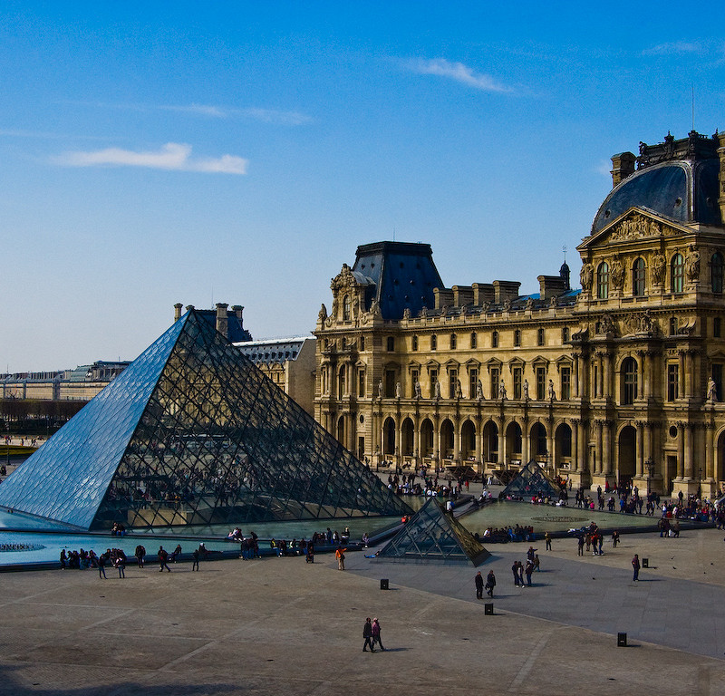
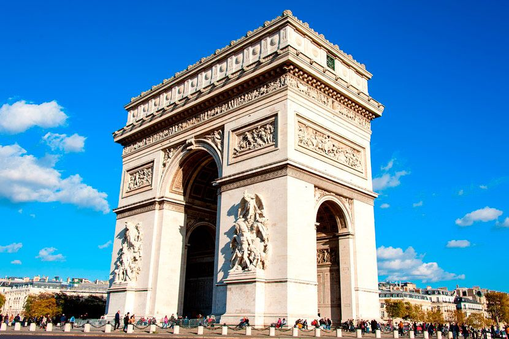
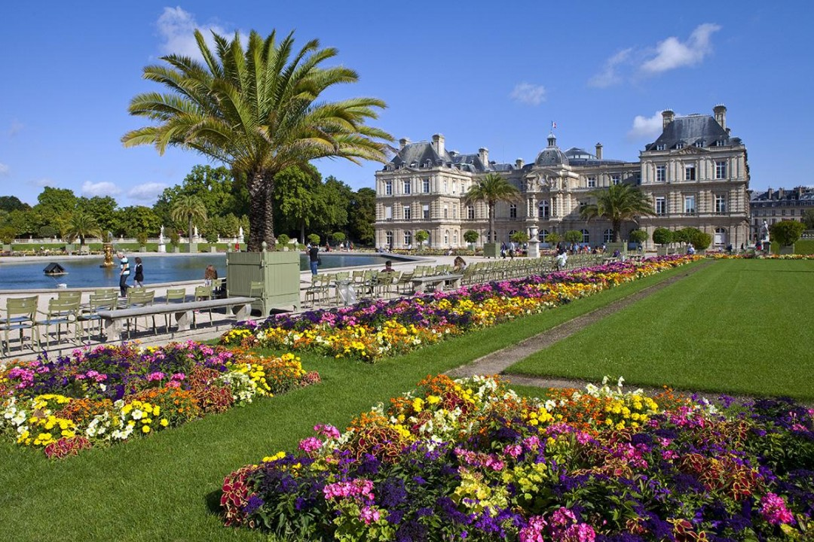
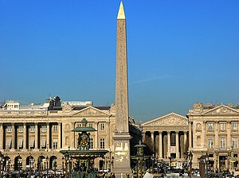
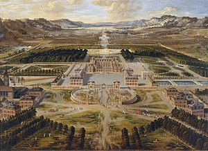

Эйфелева Башня

Эйфелева башня была спроектирована и построена французским инженером Гюставом Эйфелем. Строительство башни началось в 1887 году и завершилось в 1889 году.
Величественное сооружение, возвышающееся над Парижем как символ величия и красоты. Ее изящные кривые линии и металлическая конструкция создают впечатление легкости и грации, словно она парит в воздухе, словно олицетворение элегантности и стиля.
Лувр
Лувр - это величественное здание, пронизанное историей и искусством.Его мощные стены хранят бесценные сокровища прошлого, словно книга, в которой каждая картина или скульптура рассказывает свою удивительную историю.
Триумфальная арка
Триумфальная арка в Париже - это величественное сооружение, возвышающееся над шумной улицей Шанз-Элизе. Ее монументальные размеры и изящная архитектура заставляют зрителя задержаться и восхищаться.
Люксембургский сад
Люксембургский сад в Париже - это утопия спокойствия и красоты в самом сердце города. Здесь, среди изящных аллей, древних фонтанов и пышной зелени, время словно останавливается. Шепот листвы и пение птиц создают атмосферу умиротворения и гармонии
Площадь Согласия
Площадь Согласия в Париже - это маленький островок спокойствия среди бурного городского пульса. Здесь, среди уютных скамеек и цветущих клумб, можно насладиться тишиной и красотой окружающей природы. Аромат цветов и шум фонтанов создают атмосферу умиротворения и гармонии.
Версаль
Версаль в Париже - это великолепный маленький уголок роскоши и великолепия, где каждая деталь пропитана историей и элегантностью. Роскошные дворцы, ухоженные парки и фонтаны, изысканные сады создают неповторимую атмосферу роскоши и величия. Прогулка по Версалю напоминает путешествие во времени
Интересные факты о Франции
- Франция является самой посещаемой страной в мире. Ежегодно во Францию приезжают более 80 миллионов туристов.
- Во Франции находится самое большое количество объектов Всемирного наследия ЮНЕСКО – более 40. Сюда входят такие исторические памятники, как палаццо и сады Версаля, пещеры Ласко и многие другие.
- Французы изобрели множество важных вещей, включая фотографию, кино, парашют, велосипед, модернизированный подводный человекоход и многое другое.
- Французская кухня считается одной из лучших в мире. Здесь придумали такие изысканные блюда, как фуа-гра, эскарго, рагу и многое другое.
- Французский язык является одним из самых распространенных языков в мире. Он является официальным языком в 29 странах и используется в международных организациях, таких как ООН.
- Франция – родина моды и шопинга. Здесь находятся мировые центры моды – Париж и Канны, где проходят известные модные недели.